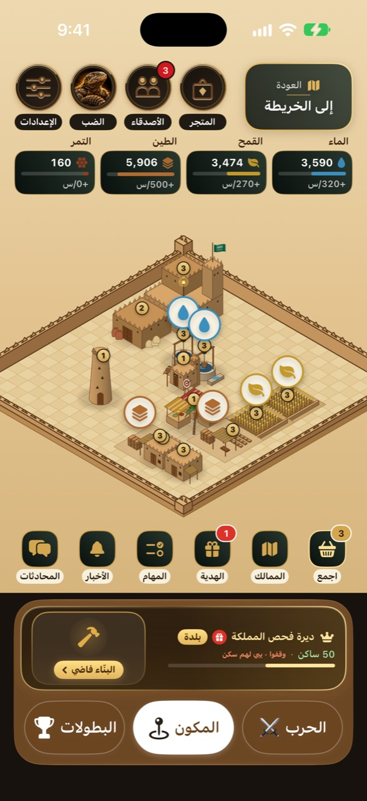

دليل اللاعب
لعبة صيد الضبان بالواقع المعزز في حيّك، وديرة نجدية تبنيها وتكبّرها في «مملكتي»، وحرب أونلاين في قرية نجدية، وبطولات بكؤوس. هذا الدليل يشرح كل شيء من أول ضب إلى الكأس.
من زر «مملكتي» فوق الخريطة تدخل ديرتك: أرض نجدية تبني فيها مجلسك وبيوت الطين والبير ومزرعة القمح والمَلبَن والمخزن والسوق والسور والمرقب والنخل. المباني تشتغل لك حتى وأنت مقفّل اللعبة، وصيدك ومبارياتك في الحرب تجيب لك قوافل على باب الديرة.

البير يطلع ماء، مزرعة القمح قمح، والمَلبَن طين. هذي الثلاثة تبني كل شي، والمخزن يحدد كم تقدر تخزّن منها.
من النخل بس (يفتح مع المجلس ٤). التمر يشتري الزينة ويطعم السكان، وما يجي من القوافل إلا مع ضب اليوم الأسطوري.
في السوق تبدّل مورد بمورد (٣ مقابل ١ في أول مستوى، وأحسن كل ما طوّرته) وترسل منه لخوياك. السور والمرقب يزيدون السكن.
المجلس يجيب ناس كل ساعة، لكن الديرة ما تستوعب أكثر من أقل ثلاثة: السكن (البيوت والمجلس، والسور والمرقب يزيدونه)، الأكل (القمح والنخل) والماء. اللي يوقّف ديرتك مكتوب في بطاقتها تحت («يبي لهم سكن»، «يبي لهم ماء»…). ومع كل لقب جديد ياخذ صندوق مكافأة ومَعلم يحطه في ديرته:
| اللقب | السكان | صندوق اللقب |
|---|---|---|
| مخيّم | البداية | — |
| قرية | ٤ | ساعتان إنتاج + ٢٠ تمر |
| بلدة | ٢٥ | ٣ ساعات + ٥٠ تمر + سبيل ماء |
| مدينة | ٨٥ | ٤ ساعات + ١٢٠ تمر + بوابة الديرة |
| حاضرة | ١٧٠ | ٦ ساعات + ٢٥٠ تمر + برج الطين |
| عاصمة | ٢٩٠ | ٨ ساعات + ٤٠٠ تمر + قصر الطين |
| درّة نجد | ٤٦٠ | ١٢ ساعة + ٧٠٠ تمر + راية الدرّة |
أرضك تكبر مع ديرتك: ١٦ مربعاً في البداية، ٢٠ عند ٥٠ ساكن، و٢٤ عند ١٧٠ ساكن.
القافلة ما تجي على وقت، تجي بسبب لعبك في المكون. كل قافلة فيها «ساعات إنتاج»: اللي تطلعه ديرتك من الماء والقمح والطين في هالساعات بمعدلها الحالي (وبحد أدنى ١٠٠ من كل مورد للساعة)، فكل ما كبرت ديرتك صارت قوافلك أثقل.
| السبب | كم ساعة إنتاج | الحد في اليوم |
|---|---|---|
| ضب اليوم (ضب البيت) | ٣ ساعات · النادر ٤ ساعات ونص · الأسطوري ٧ ساعات ونص + ٣٠٠ تمر | ١ |
| صيد ضب من الخريطة أو الحديقة | ساعة ونص | ٣ |
| مباراة حرب | الفوز ٤٥ دقيقة · أي مباراة ١٥ دقيقة | ٦ (الفوز والخسارة من نفس الحساب) |
| مباراة مع خويك (صديقك معك في نفس المباراة) | قافلة الحرب ×٢ | نفس الحد |
هدية يومية على ٧ أيام: ساعات إنتاج، وفي اليوم الرابع والسابع ألماس، وفي السابع دلّة قهوة لديرتك أول مرة.
٤ مهام يومية تتغير (صِد ضب، العب مباراة حرب أو اكسبها، اجمع موارد ديرتك مرتين، ابدأ بناء أو تطوير)، كل مهمة نص ساعة إنتاج، وإذا خلّصتها كلها صندوق فيه ساعة.
من زارك وعطاك «عجبتني»، من فزع لك، القوافل اللي أرسلها لك خوياك، وأخبار واحاتك.
حول الديار في خريطة «الممالك» فيه بيور موية ومصانع طين ومزارع قمح وواحات نخل (صغيرة ومتوسطة وكبيرة) ما لها صاحب. اللي يحتلها ياخذ إنتاجها كل ساعة فوق إنتاج ديرته، ويطلع اسمه فوقها للكل.
| الواحة | صغيرة | متوسطة | كبيرة |
|---|---|---|---|
| بير موية (ماء بالساعة) | ٦٠ | ١٦٠ | ٣٥٠ |
| مصنع طين (طين بالساعة) | ١٠٠ | ٢٥٠ | ٥٥٠ |
| مزرعة قمح (قمح بالساعة) | ٥٠ | ١٣٥ | ٣٠٠ |
| واحة نخل (تمر بالساعة) | ٨ | ٢٠ | ٤٠ |
المكون لعبة من ثلاثة أقسام يكمّلون بعض:
ما فيه تسجيل دخول ولا كلمة سر: أول ما تفتح اللعبة ينعمل لك ملف لاعب، وتختار اسمك وشخصيتك.

الخريطة تعرض الضبان اللي في حدود كيلو واحد منك. ضبان الحدائق البعيدة (اللي في حدود ٣ كم) وضبان المماشي تشوفها من أبعد عشان تعرف وين تروح.
ضب شخصي لك قريب من مكانك، يرجع لك كل ٢٤ ساعة بعد ما تصيده. حتى لو ما حولك حدائق.
أقرب حديقة لك في حدود كيلو تنزل فيها ٣ ضبان كل يوم. إذا ما فيه حديقة في كيلو، تاخذ أقرب حديقة في ٣ كم وتشوف ضبانها من بعيد.
أقرب ممشى عام منك في حدود ٥ كم ينزل فيه ٣ ضبان يومياً، وتقدر تشوفها على الخريطة من ٥ كم.
كل صيدة معتمدة تُحسب في ملفك وترفع مستواك. التدريب أوفلاين ونتائج الحرب ما ترفع المستوى.
عشرة مستويات، كل مستوى له اسم وصورة. تطلع حسب عدد صيدك المعتمد في مدينتك:
 ١ · راعي البرمن البداية
١ · راعي البرمن البداية ٣ · قصّاص أثر١٥ صيدة
٣ · قصّاص أثر١٥ صيدة ٥ · قنّاص الوادي٥٠ صيدة
٥ · قنّاص الوادي٥٠ صيدة ٧ · شاهين البر١٠٥ صيدات
٧ · شاهين البر١٠٥ صيدات ١٠ · أسطورة نجد٢٢٥ صيدة
١٠ · أسطورة نجد٢٢٥ صيدة| المستوى | الاسم | الصيد المعتمد المطلوب |
|---|---|---|
| ١ | راعي البر | من البداية |
| ٢ | متتبّع الأثر | ٥ |
| ٣ | قصّاص أثر | ١٥ |
| ٤ | عين النفود | ٣٠ |
| ٥ | قنّاص الوادي | ٥٠ |
| ٦ | خبير الجحور | ٧٥ |
| ٧ | شاهين البر | ١٠٥ |
| ٨ | ذيب المقناص | ١٤٠ |
| ٩ | شيخ الصيادين | ١٨٠ |
| ١٠ | أسطورة نجد | ٢٢٥ |
زر «قائمة الصدارة» في بطاقتك يفتح ترتيب الصيادين حسب الصيد المعتمد. ترتيبك يظهر في البطاقة (مثل #٥).
أول ثلاثة في قائمة الصدارة ياخذون تاج يظهر جنب اسمهم في كل مكان. التاج يتغيّر مع الترتيب: إذا سبقك أحد ينتقل له.
من صفحة الحرب تدخل قرية نجدية كاملة: بيوت طين وبير ونخل وجحور. تتحرك بعصا التحكم، تصوّب بسحب الشاشة، وتستخدم الزوم والقرفصاء والانبطاح والتعبئة والإطلاق. الضغط مرتين على العصا يقفز.

 التصويت على وقت المباراة
التصويت على وقت المباراة
إذا انصبت تشوف اللقطة من عين اللي أصابك، وفي نهاية المباراة «لقطاتي» بكل إصاباتك. تقدر تشارك أي لقطة كمقطع.
بين الجولات تطلع لقطة الجولة. إذا كل اللاعبين ضغطوا «تخطي اللقطة» تبدأ الجولة الجاية على طول.
محادثة صوتية مع فريقك من زر المايك. ومن إعدادات اللعبة تقدر تلعب الحرب بالعرض وتضبط الأصوات.
من ملف أي لاعب يقبل التحديات اضغط «تحدي». إذا قبل، تدخلون مباراة Search and Destroy واحد ضد واحد، أفضل من ٣ جولات: أول من ياخذ جولتين يفوز.
النتيجة تنحسب في ملفك (فوز / خسارة) وينشرها حساب «المكون» في المجلس. ما فيه تعادل: إذا تعادلتم في الجولة الحاسمة ينزل ضب الحسم (اقرأ تحته).

إذا وصلت المباراة للجولة الحاسمة (١-١ من ٣، أو ٢-٢ من ٥) وانتهى وقتها والاثنين أحياء:
في راس براس تروح المباراة مباشرة لطور الضب: مقدمة ٥ ثوانٍ مع صوت، ثم يطلع ضب سريع عند البير في وسط القرية. ما أحد يقدر يضر الثاني، واللي يصيد الضب أول يفوز. المهلة ٣ دقايق.
في بطولات الفرق يصوّت الفريقان: صيد الضب أو كشف اللاعبين. في الكشف تظهر أسماء وصور الكل من بعيد ومن ورا الجدران لمدة ٣ دقايق إضافية.


 كؤوس البطولات في ملف اللاعب، وضب الحسم.
كؤوس البطولات في ملف اللاعب، وضب الحسم.ما لها وقت: القافلة تجي من لعبك. ضب اليوم يجيب قافلة واحدة في اليوم، وضبان الخريطة والحديقة لين ٣، ومباريات الحرب لين ٦ (ومع خويك تكون مضاعفة). تستلم منها ١٠ ساعات إنتاج في اليوم والباقي ينتظرك عند الباب.
يا إنك وصلت حد اليوم من هالنوع (مثلاً ضب اليوم مرة وحدة)، أو باب الديرة ممتلئ (١٠ قوافل أو ٣٠ ساعة): ادخل ديرتك واستلم اللي واقف. وإذا ديرتك ما فتحتها بعد، صيدك ينحفظ لك في هدية الترحيب.
الفزعة والإرسال و«عجبتني» تفتح بعد ٣ أيام من فتح حسابك وأول صيدة أو مباراة، ولخوياك (أصدقائك) بس. والإرسال يحتاج سوق في ديرتك.
قوّ صيادك: مؤونة دايمة وصيد ومباريات. تكسب الهجوم إذا كانت قوتك أعلى من قوة اللي ماسكها بأكثر من ٥٪، وما تقدر تهاجم واحة في هدنة (٨ ساعات بعد كل معركة) أو صاحبها في «ملجأ».
تأكد أن الموقع مسموح للعبة. الضبان تظهر في حدود كيلو منك، وضبان الحديقة البعيدة أو الممشى من أبعد. إذا انتقلت لمدينة ثانية، اللعبة تربطك تلقائياً بأقرب حديقة في مكانك الجديد خلال دقايق. وضب البيت يرجع لك كل ٢٤ ساعة مهما كان مكانك.
لازم تكون على بعد ٣٠ متر أو أقل من الضب، وتنتظر لين يتحدد موقعك بدقة. امشِ باتجاهه شوي وانتظر ثانية.
الأسماء فريدة في اللعبة كلها، وبعض الأسماء محجوزة. غيّر حرفاً أو أضف رقماً.
المستوى من الصيد المعتمد في مدينتك فقط: ضب البيت يومياً، وضبان الحديقة والممشى. الحرب والتدريب ما ترفع المستوى، لكن الحرب تعطيك خبرة وكؤوس الفرق.
الغرفة انتهت من جهة السيرفر (مثلاً خرج كل اللاعبين). اللعبة ترجعك لقائمة الحرب تلقائياً خلال ثوانٍ وتقدر تبدأ مباراة جديدة.
المشرفون فقط. اللاعبون يسجلون ويلعبون ويشاهدون. بعض البطولات تشترط مستوى أدنى للتسجيل.
التحدي مباراة واحدة بينك وبين لاعب تختاره أنت، وقتها أنتم تحددونه. البطولة جدول مواجهات لعدة لاعبين في وقت محدد، والفائز ياخذ كأس.
دليل لعبة المكون · إصدار ١.١.٧. الأرقام والمسافات في هذا الدليل هي قواعد اللعبة الحالية وقد تتغيّر مع التحديثات.
الأصدقاء والمجلس والفرق
الأصدقاء
أضف أصدقاءك من ملفاتهم، وابحث بالاسم في قائمتك. إذا دعاك صديق إلى جلسة حرب يوصلك إشعار، وتدخل معه مباشرة.
المجلس والحي
محادثة عامة لكل اللاعبين ومحادثة لحيّك. الحساب «المكون» حساب رسمي ينشر نتائج التحديات والبطولات تلقائياً. المشرفون ينظمون المجلس ويقدرون ينشئون بطولات.
الفرق